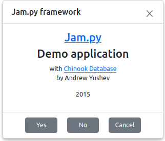

message¶
- message(mess, options)¶
domain: client
language: javascript
class AbstractItem
Description¶
Use message method to create a modal form.
The mess parameter specifies the text or html content that will appear in the body of the form.
The options parameter is an object with the following attributes:
title - the title of the form,
width - the width of the form, the default width is 400px
height - the height of the form,
margin - use the margin attribute to define margins of the form body
text_center - if true, the body tags will be centered, the default value is false,
buttons - an object that define buttons that will be created in the footer of the form, keys of the object are button names, values - functions, that will be executed when button clicked,
button_min_width - the min width of the buttons, the default value is 100px,
center_buttons - if true, the buttons will be centered, the default value is false,
close_button - if this value is true, an application will create a close button in the upper-right corner of the form, the default value is true,
close_on_escape - if true, the form will be closed, when user press Escape, the default value is true,
print - if this value is true, an application will create a print button in the upper-right corner of the form to print the body of the form, the default value is false
The method returns a jquery object of the form. To programmatically close the form pass this object to hide_message method.
Examples¶
The following code will create a yes-no-cancel dialog:
function yes_no_cancel(item, mess, yesCallback, noCallback, cancelCallback) {
var buttons = {
Yes: yesCallback,
No: noCallback,
Cancel: cancelCallback
};
item.message(mess, {buttons: buttons, margin: "20px",
text_center: true, width: 500, center_buttons: true});
}
task.message(
'<a href="http://jam-py.com/" target="_blank"><h3>Jam.py</h3></a>' +
'<h3>Demo application</h3>' +
' with <a href="http://chinookdatabase.codeplex.com/" target="_blank">Chinook Database</a>' +
'<p>by Andrew Yushev</p>' +
'<p>2015</p>',
{title: 'Jam.py framework', margin: 0, text_center: true, buttons: {"Yes": undefined, "No": undefined, "Cancel": undefined},
center_buttons: true}
);
The result of the code above will be:
{kind=link}